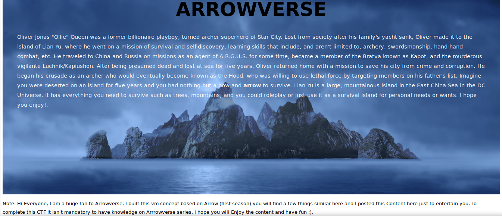
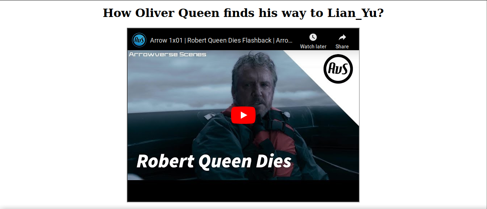
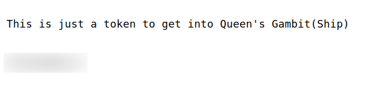
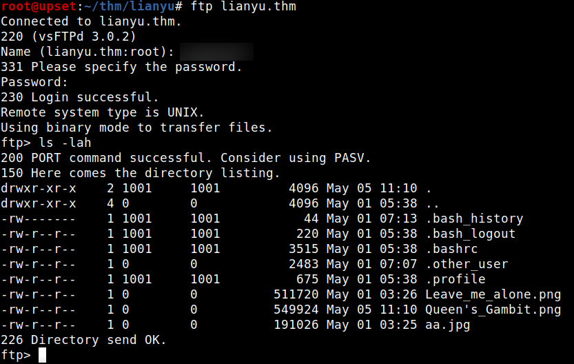
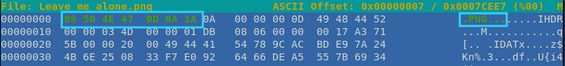
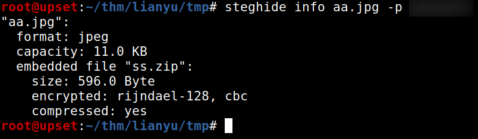
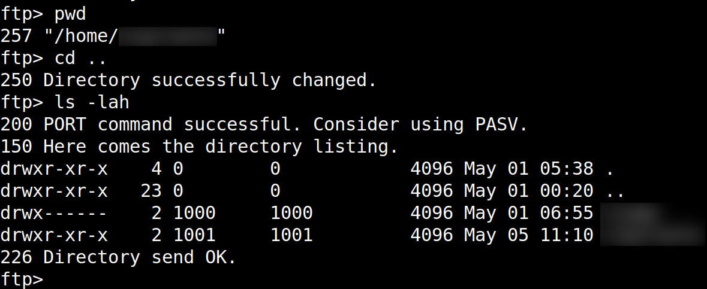
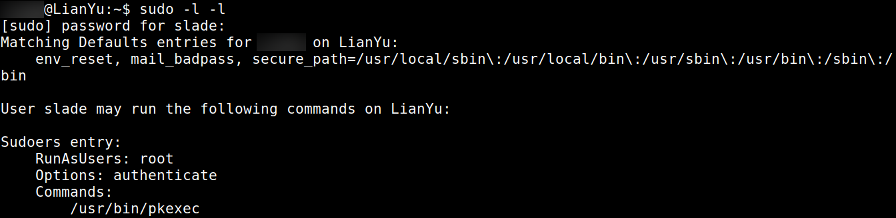

TryHackMe - Lian_Yu

Contenido
| Titulo | Lian_Yu |
|---|---|
| Room | Lian_Yu |
| Info | A beginner level security challenge |
| Puntos | 180 |
| Dificultad | Facil |
| Maker | Deamon |
NMAP
Escaneo de puertos tcp, nmap nos muestra el puerto ftp (21), 80 (http) y el puerto ssh (22) abiertos.
# Nmap 7.80 scan initiated Sat Jun 27 01:14:57 2020 as: nmap -sV -o nmap_scan_mini lianyu.thm
Nmap scan report for lianyu.thm (10.10.79.149)
Host is up (0.15s latency).
Not shown: 996 closed ports
PORT STATE SERVICE VERSION
21/tcp open ftp vsftpd 3.0.2
22/tcp open ssh OpenSSH 6.7p1 Debian 5+deb8u8 (protocol 2.0)
80/tcp open http Apache httpd
111/tcp open rpcbind 2-4 (RPC #100000)
Service Info: OSs: Unix, Linux; CPE: cpe:/o:linux:linux_kernel
Service detection performed. Please report any incorrect results at https://nmap.org/submit/ .
# Nmap done at Sat Jun 27 01:15:31 2020 -- 1 IP address (1 host up) scanned in 33.78 seconds
# Nmap 7.80 scan initiated Sat Jun 27 01:15:08 2020 as: nmap -T4 -sV -sC -p- -o nmap_scan lianyu.thm
Warning: 10.10.79.149 giving up on port because retransmission cap hit (6).
Nmap scan report for lianyu.thm (10.10.79.149)
Host is up (0.15s latency).
Not shown: 65517 closed ports
PORT STATE SERVICE VERSION
21/tcp open ftp vsftpd 3.0.2
22/tcp open ssh OpenSSH 6.7p1 Debian 5+deb8u8 (protocol 2.0)
| ssh-hostkey:
| 1024 56:50:bd:11:ef:d4:ac:56:32:c3:ee:73:3e:de:87:f4 (DSA)
| 2048 39:6f:3a:9c:b6:2d:ad:0c:d8:6d:be:77:13:07:25:d6 (RSA)
| 256 a6:69:96:d7:6d:61:27:96:7e:bb:9f:83:60:1b:52:12 (ECDSA)
|_ 256 3f:43:76:75:a8:5a:a6:cd:33:b0:66:42:04:91:fe:a0 (ED25519)
80/tcp open http Apache httpd
|_http-server-header: Apache
|_http-title: Purgatory
111/tcp open rpcbind 2-4 (RPC #100000)
| rpcinfo:
| program version port/proto service
| 100000 2,3,4 111/tcp rpcbind
| 100000 2,3,4 111/udp rpcbind
| 100000 3,4 111/tcp6 rpcbind
| 100000 3,4 111/udp6 rpcbind
| 100024 1 35854/udp6 status
| 100024 1 39587/tcp6 status
| 100024 1 40288/udp status
|_ 100024 1 47359/tcp status
7573/tcp filtered unknown
8324/tcp filtered unknown
12786/tcp filtered unknown
14426/tcp filtered unknown
18334/tcp filtered unknown
24024/tcp filtered unknown
27137/tcp filtered unknown
37836/tcp filtered unknown
40619/tcp filtered unknown
47359/tcp open status 1 (RPC #100024)
49276/tcp filtered unknown
54432/tcp filtered unknown
56048/tcp filtered unknown
60898/tcp filtered unknown
Service Info: OSs: Unix, Linux; CPE: cpe:/o:linux:linux_kernel
Service detection performed. Please report any incorrect results at https://nmap.org/submit/ .
# Nmap done at Sat Jun 27 01:41:23 2020 -- 1 IP address (1 host up) scanned in 1574.59 seconds
HTTP
Encontramos una pagina web en el puerto 80. 
GOBUSTER
Utilizamos gobuster para busqueda de directorios y archivos.
root@upset:~/thm/lianyu# gobuster dir -u http://lianyu.thm/ -w /usr/share/wordlists/dirbuster/directory-list-lowercase-2.3-small.txt -q -t 250 -x php,html,txt
/index.html (Status: 200)
/island (Status: 301)
Encontramos una pagina donde hay una palabra clave.

Nuevamente ejecutamos GOBUSTER en este directorio nuevo.
root@upset:~/thm/lianyu# gobuster dir -u http://lianyu.thm/island/ -w /usr/share/wordlists/dirbuster/directory-list-lowercase-2.3-small.txt -q -t 100 -x php,html,txt
/index.html (Status: 200)
/2100 (Status: 301)
En el nuevo directorio encontramos un video de YouTube incrustado en la pagina. 
En el codigo fuente de esta pagina encontramos un comentarios que indica que podemos aprovechar nuestro .ticket.

Intentamos ejecutar nuevamente GOBUSTER sobre este directorio para ver si encontramos algun otro directorio o pagina, pero no logramos. Por lo que agregamos ticket como una extension en gobuster. Al hacer esto encontramos una nueva pagina, en la que muestra un “token”.
root@upset:~/thm/lianyu# gobuster dir -u http://lianyu.thm/island/2100/ -w /usr/share/wordlists/dirbuster/directory-list-lowercase-2.3-small.txt -q -t 100 -x php,html,txt,ticket
/index.html (Status: 200)
/green_arrow.ticket (Status: 200)

Utilizamos CyberChef para poder decodificar el token, utilizamos base32.

FTP
Ahora tenemos una palabra clave y un token, utilizamos ambos como credenciales en el servicio FTP y logramos obtener acceso. 
Vemos varios archivos los cuales descargamos, la mayoria, imagenes. Al analizar las imagenes nos damos cuenta de que una de ellas aun teniendo la extension PNG sus magic numbers no son los que deberian.

Utilizamos hexeditor para editar y agregar los magic numbers de una imagen PNG.
89 50 4E 47 0D 0A 1A 0A

STEGANOGRAFIA
Al realizar los cambios vemos en la imagen una contraseña. Pero ¿para qué?.

En las imagenes que descargamos vemos una con extension jpg, inspeccionamos esta imagen para ver si existe un archivo dentro de esta, utilizando steghide junto a la contraseña. El resultado nos muestra que hay dos archivos.

Extraemos los archivos y vemos un mensaje en uno de estos y lo que parece ser una contraseña en el otro.

USER - SSH
Intentamos utilizar la contraseña que encontramos en el servicio SSH con el usuario de FTP, pero no logramos obtener acceso. Regresamos nuevamente a FTP, y revisamos el directorio actual, vemos que es en el home, intentamos regresar y vemos el nombre de el otro usuario.

Utilizamos la contraseña con este usuario y logramos obtener acceso y nuestra flag user.txt.

PRIVILEGE ESCALATION
Hacemos una pequeña enumeracion con sudo -l -l y vemos que tenemos permisos root (sudo) para ejecutar el comando pkexec. Utilizamos pkexec para obtener una shell root.

Obtenemos una shell con usuario root y nuestra flag root.txt.